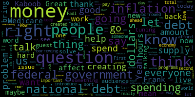

[Callahan]: You let me know when we're live. Awesome. Great. Good to see everyone. Thanks for tuning in today. This is Solidarity Live, where we talk about the issues that affect people in Medford and Somerville, and how we can work together to solve them. Today, we are going to be talking about an issue that affects everyone. everyone in the United States, everyone in many other countries. And that is the question of our national debt and our money supply. So before, I do have an exciting guest, but before I bring our guest on, I want to have people in the audience just think about a few questions before we start. And one is, do you think that our national debt is a problem? Is it something that worries you, the size of our national debt? And if we could reduce our national debt to zero, would that be good? Is that something that you think would help solve some of our problems? And my third question is, who are we borrowing this money from, right? If we have national debt, we've borrowed it from someone, we owe it to someone. Who have we borrowed it from? And who do we owe it to? And how do we pay it back? These are questions we're going to be talking about in addition to the even more important questions about how a new way of understanding our national debt can help us be able to fund things like a Green New Deal and Medicare for All and other programs that are important to us. So now I'm going to introduce Fadel Kaboob and Frank, if Frank, our producer could bring Fadel on, that would be great. First, let me just make sure if I pronounced your name correctly.
[SPEAKER_00]: Yes, Fadel Kaboob. Thank you. Thanks for having me.
[Callahan]: Fantastic. Great. So Fadl Kaboob is an associate professor of economics at Denison, and he's also the president of the Global Institute for Sustainable Prosperity. And Fadl, I would love for you to go ahead and just introduce yourself and your work.
[SPEAKER_00]: Well, thank you for having me on this show and thank you for covering this important topic. I think everybody's interested in this subject right now in the middle of a presidential election, in the middle of a climate crisis, in the middle of a pandemic, where we know that there is so much need and so many things that need to be invested in spent on and covered and taken care of and everybody's worried where are we going to find the money how are we going to pay for all of this stuff who are we going to tax you know you've heard it already we've been taxed enough already that's the tea party And who are we going to borrow from? The country is bankrupt. It's a burden on future generations and so on. So my work over the last several, you know, a couple of decades, at least my professional life, has been focused on these questions in the context of the US, but also in the context of developing countries in the global South. So you can imagine the concern about, you know, poorer countries with fewer resources is even bigger. But let's limit our conversation today to the US to keep things more focused. So this approach to economics that I'm part of, it's called Modern Monetary Theory or MMT for short. You've probably seen it all over the news in the last year or so, at least on the national stage. It's a very simple set of observations to describe how the system currently works. And it's trying to highlight the mechanics of the existing ways we finance federal spending. And it's trying to highlight some of the key limitations and some of the key obstacles. And it just happens to be an approach that goes completely against the mainstream understanding of what federal spending supposed to be and what the real constraints are supposed to be. So let me put it this way, a couple of observations. Number one, the federal government is very different from a financial standpoint, very different from state and local municipal governments, is very different than you and I. So you and I have to work hard, earn an income first, then we spend it. You and I can also borrow if we want to spend beyond our income, buy a big house or buy a new car or whatever. But once we borrow, we have a debt that must be paid at some point in the future. And the only way to pay that debt is either by earning more income somehow or spending less on other things so we can pay the bills. That's the only way to do it. Your local municipalities, your states, your cities also function the same way you and I function. They collect tax revenues from their residents. They use those tax revenues to spend on schools and housing and whatever programs the city or municipalities are spending on. And that's it. They're limited by tax revenues. They can borrow to build a new school, to build a new stadium for the city or whatever. But now the city has debt or the state has debt that must be paid for at some point in the future, maybe the next 20 years or so, by raising more tax revenues. That's why we have school levies. Right. That's why city taxes and state taxes go up to pay for those big expenditures. So that's the meaning of debt for you and I, for cities, for municipalities.
[Callahan]: And it's so ingrained in us, right? Because we live with it day to day and we have this fear of what might happen if we go into debt. We've known people have gone into debt. It's a thing that's very difficult for us to think differently.
[SPEAKER_00]: Exactly. So we learn to live within our means. as families as as companies as nonprofit organizations where you have to raise revenues before you spend them right. You don't have unlimited borrowing capacity. And cities and municipalities also learn to live within their means. If the public is demanding this big thing this ambitious thing The city or the state will say, well, too bad. We just can't afford it. We have to settle for a smaller version of the thing that you're asking for. But at the federal level, there is a very different mechanism for running public finances that is very different. from the rest of us users of the dollar. Think of the federal government as the issuer of the dollar. It's the only entity that can legally print the currency to begin with. But it's also, you know, functioning in a completely different way. And I'll highlight a few historical examples that people will connect to, to understand that the federal government is not limited the same way your state or municipality or you and I are limited. Some historical examples, some very recent. I'm talking about the CARES Act, for example. So when the CARES Act was being introduced in Washington, D.C. six months ago, if you go back just a couple of weeks before that, everybody in D.C. was convinced there was no money for a Green New Deal. There is no money for Medicare for All. There's no money for broadband infrastructure. Everybody was convinced, Democrats, Republicans, the general public that we're broke. You know, there's no way we can spend trillions of dollars on these ambitious transformative programs. And we were told just to settle for either nothing or maybe hopefully a little bit, you know, and over time we'll deal with it. But then all of a sudden the pandemic hits and we realize that we need to intervene on a massive scale. to provide relief for the U.S. consumers and businesses and so on. So all of a sudden, 535 people in D.C. get together and they vote to approve trillions of dollars worth of spending. And they did it without telling us who they borrowed from, which they didn't borrow from anybody, or who they taxed. On top of it, the president and the secretary of Treasury came out during that same week and said, by the way, April 15th is right around the corner. Don't worry about paying your taxes. We don't need your taxes. We'll postpone that to July 15th or whatever. So we didn't tax anybody. We didn't borrow from anybody. And the taxes that were due the following month, we told you we don't actually need it. And that's how the federal government always spends. The federal government doesn't need tax revenues or borrowing in order to spend. Now, taxing and borrowing are still important, but they're not the thing we use to finance spending. I'll give you even a better example, which is World War II. World War II came right after the Great Depression, the most miserable time in U.S. history. There was no money to be taxed in the economy, and there was no money to be borrowed, right? So that's like the very definition of broke, right? The system was broke. And all of a sudden, World War II is staring at us as a US economy. And we have to spend a massive amount of money to build for the war effort and to win the war. Now, can you imagine if we used our local city municipal budget thinking, during World War II and said, well, listen, this thing is really expensive. We can't afford it. We can only afford a small, mini portion of the war. So how about we send 5,000 troops to Germany and see if we can scare them away? Do the incremental solution, right? You can't do that, obviously. So how did we pay for World War II without taxing anybody, without borrowing for anybody? Well, the government did it the same way they spend on any program. You know, not just those programs, not just the CARES Act. This is how the government always spends. 535 people vote, approve the spending. The spending is done. It enters into the economy. The part that we should be concerned about, and we were very concerned about during World War II, is what will be the effect of this additional spending? We know that the government can spend as long as it's approved by Congress. It's the law. The Congress has the power of the purse. The thing that Congress should always be concerned about, and we were very concerned about during World War II, was the risk of inflation. If we flood the system with billions of dollars worth of decent wages for people who are building the airplanes and the tanks and the military equipment, what will they do with that money? Well, it's a free country. They're gonna go out and wanna buy a house or wanna buy a car or wanna go on vacation, whatever it is, right? It's a free country. That's freedom, that's democracy. Except there was a problem. We had the vast majority of the working people of this country busy producing military equipment and not enough people producing cars or homes or any of the consumer goods. So we were going to be facing a situation where lots of people building airplanes have cash and they want to go out on a shopping spree and now they're going to bid up the price of homes and cars and consumer goods and cause inflation. So what did we do to prevent that scenario from happening? We leveraged the patriotic mood of the nation and said, here's what you're going to do. You're going to buy this freedom bond from the U.S. Treasury. They call them freedom bonds and war bonds, which means you're going to give me, say, $10,000 of your hard earned income. You're going to save it by buying this freedom bond. And we, the U.S. Treasury, promise to pay you back in 10 years or 15 years or whatever the duration is, plus interest. which means after the war, we'll give you your money back plus interest, and then you can go out on a shopping spree. And that was the post-war boom. But notice, the sale of those freedom bonds and treasury bonds didn't happen before World War II. It wasn't to finance World War II, like most people think. It happened during World War II, as the money was already spent into existence. We found a way to pull it back out in a less coercive way. So we could have taxed it away. We could have coercively taken the money. But of course, why would you want to do that? You tax the upper income, you tax for other reasons. But the sale of those U.S. Treasury bonds, which we call borrowing, I mean, why would the government need to borrow its own money? That's kind of a silly thing. You and I call it borrowing, but from the federal government perspective, it's not for the purpose of borrowing. At the time it was for the purpose of taming the risk of inflation, postponing consumption until after the war. There are other reasons also for selling government bonds, stabilizing interest rates and so on, which we can get into, but it gets more technical.
[Callahan]: Can I just pause you for a second? Yeah, of course. So I want to go back a little bit, right? Because I think when we use this term, spending, like the government is spending. I think it's very hard for us, you know, as people who spend money, who earn money, spend money, borrow money, when we talk about the federal government as spending money and borrowing money, I think it's hard for people to understand how it's different for the federal government. So when the federal government, let me just ask this question, when the federal government spends money, and you say spend into existence, like they're actually creating more dollars, right? So they're increasing the money supply, right? So it's not like they're spending. They're just creating more dollars and giving those new dollars to people or companies. Is that accurate?
[SPEAKER_00]: Yeah, absolutely. Think of federal spending. Every time the federal government spends, it's always spending new money into the economy. Right. Whether it's going to corporations or individuals or whatever, it's always new money. Every time the government taxes money out of the system, think of it as dollars being destroyed. It's taxed out of existence. But. when your local tax authority is taxing, it's not taxing and destroying those dollars. They're taxing in order to spend because they're like you and I. They earn the dollars and they have to spend them. The federal government doesn't need to borrow from you or from me in order to start a war, right? Congress decides when they want to start a war. Congress decides when they want to pay for the CARES Act. Congress decides when they want to pass a tax cut. It has nothing to do with my permission, me giving them permission, other than voting for different politicians, depending on their platform. But we don't decide what tax dollars are going to do. Congress always approves the spending, case in point, every time there is a war. You know, where does the money come from? It's always a deficit.
[Callahan]: There doesn't have to be a war either. We can just increase the military budget for no reason at all. And that money is created by the federal government because the federal government is the only entity in the world that can create dollars.
[SPEAKER_00]: Right. So here's a takeaway point from this understanding the difference between us, the users of the dollar versus the federal government. Every time I have a deficit, it's a problem. Every time you have a deficit with your bank, it's a problem. When your city has a deficit, they have to cut their spending. When the state has a deficit, they have to cut their spending. That's the prudent, reasonable thing to do, right? When businesses have a deficit, they have to worry about it. But when the federal government has a deficit, it simply means that it spent more dollars into the economy than what it has taxed out of the system.
[Callahan]: And that means that it created more dollars in the economy than it destroyed, right? So it simply increased the amount of money in the economy.
[SPEAKER_00]: So then the deficit, let's say it's a trillion dollar deficit to keep the numbers simple. The deficit for the federal government, that $1 trillion that went into the system and hasn't been taxed yet, that's money available to the rest of us to use. Now we didn't say anything about distribution. Could be most of it is going to Bezos or Walmart or whatever. That's a separate question, but it simply means the deficit for the federal government is the exact equivalent to the penny of the surplus that the rest of us users of the dollar have available to us collectively.
[Callahan]: And the same with the debt, that's also true of the debt, like that the total amount, I've heard Warren Moser talk about this, that like the total amount of the national debt is equivalent to the net amount of dollars in savings in the world.
[SPEAKER_00]: Exactly. Exactly. U.S. dollars, right, available outside the U.S. federal government system. Yeah, absolutely. That scary word that you and I are always the things that keep us awake at night, the deficit that we have, your credit card debt, your your personal debt, your student loan debt. All those things come with that with that loaded psychological meaning of debt. But then we use the same term to refer to the national debt. And that's where you get those scary messages from politicians that say, we're broke, right? You know, every child born in this country is, you know, has to pay, you know, $50,000 or $60,000 for the rest of their life to pay off the national debt. Well, here's the thing about the national debt. There were politicians, you know, throughout U.S. history who always had this concern about the debt, that we're going bankrupt. And we still have those politicians, obviously, to this day. But there were six times in US history where Congress literally tried to pay off the national debt. They were so concerned about it that they wanted to get rid of it completely. And in some cases, they almost succeeded to bring it down to zero. And every single time, six times, every single time they did that, we ended up immediately in a Great Depression. Not a recession, not a small hiccup, a Great Depression. The last time Congress tried to do this was 1929, which started the Great Depression. So we know this for a fact, because what you're doing by paying off the national debt, you're literally sucking out money from the system. You're extracting wealth from the population. You're bringing the system to a halt. Every time we do that. So since then, we always have politicians talking about paying off the national debt. but they know that they can't and they know they shouldn't, but they still use this, you know, quote unquote kitchen table conversation because it's so convenient to speak to your, to talk to your constituents about their economic struggle and say, vote for me. I know what it's like to sit at the kitchen table and pay the bills and balance your checkbook vote for me. And I'll go to DC and make the, I'll make the government just as responsible as you. And that's the problem. But imagine if a politician, if I'm running for office and I say, vote for me and I'll go to D.C. and I'll make sure that the federal government has a surplus, which means you, the private sector, I'll make sure that you guys have a deficit. Would anybody vote for somebody like that? Of course not.
[Callahan]: So is it fair to say that the debt, right? I mean, the deficit is what each year, like the yearly difference, right?
[SPEAKER_00]: The deficit is annual. The national debt is the summation of all the previous years. Right.
[Callahan]: Right. And so is it fair to say that the debt is the money supply? I mean, money supply has its own sort of definitions. Is that right?
[SPEAKER_00]: Yeah. There are other components of the money supply. So maybe I should clarify here because somebody at some point will comment and say, well, well, a lot of the money created in the system doesn't come from the federal government. That comes from private banks. So let's get into that. We in the MMT literature say that the government is the monopoly issuer of the currency. We're talking about literally printing dollars. Nobody can do that. But the government, the federal government, gives licenses to private banks, their banking license, in order to operate legally as a bank. And in that process, the federal government is essentially franchising its monopoly power for money creation, not printing money, but money creation. So every time a bank issues a loan to you or to me, it's actually creating new money into the system, not printing, but creating money. These days it's digital. And the legal documents that allow banks to do that and allow them to enforce the use of this new digital money or paper money or whatever, is their banking license. So when you buy a house, when you get a loan to buy a house or buy a car, you sign a lot of paperwork, right? They say sign here, initial here, sign here, initial here. There's one document, that's the most important document in this process, which is something called the promissory note, which essentially says, just like the title of the paper says, it's a promissory note, which means I promise to pay you back $200,000, right, for the loan that I'm getting today, plus interest and all that. As the bank is creating this two hundred thousand dollar loan to me the customer they're doing two things from an accounting perspective on the asset side of their books. They have an asset. Now the bank has an asset which is that promissory note that says I owe you two hundred thousand dollars plus interest. That's something that the bank counts on its books as real money, as an asset, right? They can go to court and they can go after me and get the $200,000, right? But on the liability side, what's the bank liable for? They just created a bank account for me and they deposited $200,000 in it so I can actually buy the house or buy the car or start the business or whatever. So what they've done is start from zero and increase their liabilities and their assets by $200,000 at the same time. which means their books are still balanced. Now tell me what's stopping them from making that loan instead of 200,000, making it 300,000, 500,000, nothing in terms of the mechanics of creating the loan. But their responsibility is not just to inflate the value of my loan and let me buy the most expensive house that I can't afford their job. And that's their responsibility. That's why they have a banking license and they're regulated is to serve the public purpose, which is to, finance the creation of jobs, the building of homes, the purchasing of homes for individuals and so on, which means their job is not just to sign those documents and increase the amounts. Their job is to make sure that I'm actually able to afford that house, that I actually have a stable job and have a track record that allows me to finance that house over the next 30 years and so on. So that's their due diligence. That's their responsibility. But, you know, as we've known from the 2008 experience, they have the capacity to create those loans. So they create them and they get you into trouble by forcing you to buy an overinflated, overpriced home and so on. And that's what got us into the 2008 crisis. But also, it gives them the capacity to finance all kinds of other speculative behavior with other financial institutions. And that's really the problem. So the problem is not the fact that banks can create money, because we want to finance homes and education and so on, but we don't want that to be speculative. We want it to be productive. We want it to serve the public purpose. So that's something to recognize. And just like the government gives them a license to operate under those rules, the government can take that license away from them. The government can give that license, by the way, to the post office. It can give it to a public bank. It can give it to another financial institution that serves the public purpose, right? Because we don't want the federal government to micromanage every single home loan, right? We want to franchise that bureaucratic role to people in local communities who know the needs and have better information and can deal with the logistics. But there's nothing that says it has to be Bank of America. It can be a community development bank. It can be any other legal entity that follows the rules and serves the public purpose. So to clarify that the federal government is the ultimate authority that creates the currency, but it licenses the right to create money to other private agents, right? Those agents of the government, of the federal government, we call them banks, but they can be a post office, right?
[Callahan]: Yeah. So another question, because I know part of what excites me and a lot of other people about this idea is the things that we could do, the things that we could afford, and how it affects those things. And I know a lot of people are interested in the question of inflation and how that, once we realize that there really is no problem with the federal government creating money, right, spending money or creating money, that we can afford these things and we don't have to say for Medicare for all, we don't have to say how can we pay for that, we never have to say that. So now the real question becomes inflation. And so I'd love for you to talk about maybe the jobs guarantee and or Medicare for all and or other programs that we could be spending more on, maybe, you know, college debt and how that kind of intersects with inflation.
[SPEAKER_00]: Very good question. So before I get into the things that we can afford, let me talk about the things that we can't afford. And my main message is that the status quo, the current system is already too expensive. That's the part that we can't afford. And what we're proposing, things like the Green New Deal or Medicare for All or a job guarantee, these are actually the cheaper, healthier options. That's how we shift the narrative. So we already spent trillions of dollars on the opioid crisis. We spent hundreds of billions of dollars building prisons and dealing with, you know, the negative effects of unemployment and juvenile issues and so on. Wouldn't we rather spend the money on after-school programs, early childhood education on summer camps to inspire kids with music and theater and sports or not do that because it's too expensive and then end up building prisons for those same kids. who didn't have the opportunities growing up in middle school and high school and beyond. Wouldn't we rather clean up the water source with clean energy and so on or not do that and then end up paying 10 times the cost in financial terms, but in also quality of life for cancer treatment and breathing treatments and things like that. So that's the first step is recognizing that we can't afford this. But what we're introducing are actually the cheaper version. So that's point number one. Point number two related to inflation. All the people who worry about inflation, by the way, you know, I'm sorry, but the last, you know, 12 years, every single central bank around the world, the ECB, the U.S. Fed and Bank of Canada, Australia, all of them have been targeting inflation at 2 percent. And they used every trick in the textbook, literally. to bring inflation to that level. They call it inflation targeting. And they fail miserably. Yeah, yeah. To bring inflation up from close to zero, which will be a deflation, kind of slippery slope into a great depression, to bring it to 2 percent. And I'm glad you had that reaction. I'll come back to it. Because people are surprised. What? They're trying to raise inflation? Yes. So I'll come back to that point. So they're trying to raise inflation from almost zero to 2 percent because below zero is a slippery slope into a Great Depression which is counterintuitive. I'll come back to that point. But let's say they know what they're doing and they need it to be at 2 percent. They used every trick in the textbook to raise inflation to 2 percent and they couldn't. Which means their theory of what causes inflation is completely unreliable. And it's not me saying it. They finally came out one after the other, all the major central banks, and they admitted, we have no reliable theory of inflation. In other words, in plain English, we don't actually know what causes inflation.
[Callahan]: Or we don't know what we're doing in the central bank.
[SPEAKER_00]: So that's point number one. Point number two. which, which was your reaction. And I think your listeners reaction is what they're trying to raise inflation. I can't afford health care. I can't afford education. So this is where the MMT analysis of inflation comes in. So when you look at the numbers, you realize that yes, the actual inflation rate is below 2%, but that's the average. You know, nobody pays the average for their, for their bills. You pay actual bills for health insurance, for transportation, for housing, And I'm mentioning these because these are actually the main drivers of inflation, which guess what? Most economists don't pay attention to. But you and I pay the bills and know what actually what's what's causing the pain in your budget. It's housing, it's energy and transportation. It's healthcare and it's higher education. These are the top four, but there are others, obviously. But it turns out in the inflation index, which is the average price for the economy, there are so many other things that are deflating because we're importing cheap plastics from developing countries and so on. And there's, you know, technology is getting cheaper. Food, you know, sometimes goes up, sometimes goes down. But there are other factors that are deflating. Think of plastic toys. But all of these four things that I mentioned are inflating. And they average out to that number, 1.5 percent or whatever it is. So, of course, you and I are concerned about health and education and those things. But the central bank, the Fed, is concerned about the average. And they're not concerned about how you're going to pay for that health insurance bill and so on. So let me bring you to the MMT approach to how do we pay for all of these things that we want without causing inflation, without bankrupting the country. So MMT is essentially saying the federal government has a spending capacity that's much larger than what most economists think, because most economists think it's limited by tax revenues. And it's limited by borrowing capacity, just like states and municipalities, just like you and I. MMT is saying, no, no, no, it's much larger than that, but it's not unlimited. Just in case the signal cut out, it's not unlimited. I'm saying it again. It's limited by the risk of inflation, which means we need to figure out what determines that risk of inflation. And MMT has an answer. The risk of inflation is determined by two things. One is the availability of productive capacity, meaning do we have the skilled people, the engineering capacity, the raw materials, the machines to produce things? So if the demand for housing goes up, do we have enough resources to build more housing? If the answer is yes, then we can increase spending on housing without causing inflation in housing. But if we physically ran out of raw materials and skilled people to build homes, But more people want to buy homes. The price will go up and that will cause inflation. So think of this across the board in all areas of spending in the economy. Obviously there are some pockets of the economy where we have shortages of skills or resources or technology and some areas where we have plenty of room to spend without causing prices to go up which means that risk of inflation can be dealt with, with strategic planning and strategic spending. The good news about shortage of productive capacity, we can train people, we can build resources. So resources are producible in that sense. So that's the easy part to plan for and to organize for.
[Callahan]: And by the way, I'm gonna let you go on in a second. We do have a question from the audience, so.
[SPEAKER_00]: Wonderful.
[Callahan]: If you want to keep going, then we'll come back.
[SPEAKER_00]: I'll do this and then I'll take the question. So the second risk of inflation has to do with prices going up in certain areas of the economy because we have too much market power. So think of your health insurance companies. Why do they raise prices? Because they can. In other words, because we let them. Think of energy companies. Think of real estate companies. Why do they raise prices? Because they can, because they dominate the market. So that kind of inflation risk It's not going to go away by spending less. It only goes away if you tax and regulate that market power out of existence. In other words you make those markets more democratic more competitive. And if you do that if we're successful at doing that then all of a sudden we've just increased our spending capacity. quite a lot, which means we can now afford more of an ambitious Green New Deal or healthcare program. But if we can't, if we leave the risk of inflation where it is, by not building more capacity, by not training more people, and by not taxing and regulating that market power, then we keep that fiscal spending space very limited and say, oh, it's too bad, we can't afford it because big pharma didn't let us and the super PACs didn't let us. My final point here is that it's those 535 people we elect in D.C. whose responsibility is to tax and regulate that market power. Are they going to bite the hands that feed them? If they're brought to you by super PACs, then we don't have a democracy. We don't have a government of the people by the people for the people. We have a government of the super PACs for the super PACs. And that's really the crux of the MMT approach, that it's not just a technical kind of economic policy program. It shines the light on the institutional structure of the economy. And that institutional structure includes politics, includes the legal framework. That's why we call them lawmakers, because they make the laws. right? And if we are not going to be able to redesign the system to be more equitable, to be more sustainable, unless we redesign the institutional mechanism. So there's no way to avoid the political fight in this. And what we're trying to do in the MMT community is educate, empower, inform people so that they can mobilize to push back against those structures, because otherwise, we literally don't have a democracy, which means we're not going to afford a Green New Deal with an oligarchy in charge of how government finances operate.
[Callahan]: Yeah. Wow. OK, so let's go ahead and do a question. This one is from Frank Lee. And the question is, why has there been such low inflation despite the massive money creation responding to 2008 and responding to COVID?
[SPEAKER_00]: Right, because that's exactly the point. We have this mainstream theory or mainstream myth that says more money spending leads to inflation. And that's precisely the point. I mean, look at Japan, almost three decades of massive quantitative easing and large fiscal deficits and no inflation. They actually have deflation, right, which is the main problem that they have. And Japan, for decades, the U.S. has done it since 2008, the ECB, the Bank of Canada, all of these central banks, that's what I meant when I said that they tried every trick in the textbook, right? It says printing money will cause inflation. Well, that's not what causes inflation. What causes inflation is when you run out of productive capacity, if you're spending in ways that actually increase consumer spending and consumer demand in key areas, or if you have too much market power and market concentration. But we've been doing this for decades without pushing that risk of inflation when it comes to market power. So what do we end up with? We end up with austerity, with no job creation and more market power for big pharma and health insurance companies. So we end up with the short end of the stick on both sides. And then we end up in a stagnation. Japan has been stuck in a stagnation like this. So with the fraction of the dollar amount that was dedicated to QE, for example, all the QE since 2008, we could have paid for a job guarantee program, a green job guarantee program. We could have moved away from the current healthcare system into a more universal healthcare system. We could have done so much more at a fraction of this. And when you look at how much money was dedicated to monetary policy, quantitative easing, trillions of dollars, literally, and that recovery from 2008 until we hit the pandemic, was slow and painful for the majority of people, right? Most people by 2015, 2016, most people when you ask them, they literally think that the recession is still happening. When technically the recession ended, you know, in less than two years, you know, 18 months, the recession was over, and it was already called the recovery. But as my colleague, Pavlina Chernova and her work demonstrated, that that recovery was the worst in terms of income distribution. And what her work showed is that during the recovery, not the recession of 2008, during the recovery, most of the gains of the recovery went to the top 10%. And the bottom 10% actually lost ground during the recovery, not just during the crisis. During the crisis, everybody lost. But during the recovery, the bottom 90% of Americans were still losing ground.
[Callahan]: And this seems like it's related to the inflation deflation problem, that if all the money being spent goes to the 1% who are not going to buy more consumer goods, then it doesn't help bring inflation up, which is apparently I didn't know this is what people are trying to do now because their inflation is not for normal consumer goods. There isn't enough demand. Does that sound right?
[SPEAKER_00]: Well, most consumers are in debt. So what do they do with their income? They pay interest and they pay late fees. And that shows up on, you know, in terms of economic growth as GDP. Right. So it's celebrated on TV that the economy grew by five percent because we all paid five percent interest. which perpetuates this fiction of economic growth. But is it really improving quality of life or is it just, you know, like we're living in medieval Europe and we're paying rent to the landlords, right? Which is an interesting way to think about it. But to go back to those four areas of inflation, I think, because people will be interested in this, it has to do with market power. So I think the obvious one is the health care industry, pharmaceutical industry and health insurance. I think we all know it. They just raise your premium by 20 percent because they can. And there's nothing you can do to negotiate. And we know this. Employers have to pay it. You have to pay it. It's a problem. Right. The when it comes to you know, that's why the Green New Deal, by the way, includes those four areas. It's not by accident. It's not like the favorite shopping list of the progressives. We include those areas because those areas need to be democratized and they need to have additional productive capacity built in. So additional hospital beds and additional nursing and doctors and so on, in terms of staffing capabilities. So those four areas, they have that exclusive market power, which not only allows them to raise prices, but allows them to essentially set quotas and exclude people from services. We exclude people from higher education. We exclude people from health. We exclude people from literally access to affordable energy. We have energy poverty in the United States, especially the northern states where you are, where states and municipalities literally have to subsidize heating bills for the lowest income members of the community in the wintertime. Otherwise, they literally die of cold. And we have heat strokes in the summer. So it works both ways for the weather. So this is what we mean by socioeconomic exclusion. We're setting prices high to exclude people without offering a public option. So the Green New Deal will decarbonize, which means we produce affordable, renewable energy and create millions of jobs, good paying jobs in doing that. We're introducing Medicare for all to eliminate the price setting behavior and eliminate the inefficiency and increase the provisioning of healthcare to people who need it. And by the way, it's cheaper to do the preventative than not do the preventative and then end up with a heart surgery, with diabetes, which again, the current system is too expensive and too exclusive. We want it to be more affordable and more inclusive for everybody. Higher education is tricky. And I teach in this system, so I'm aware of, so this has to do with two things. Higher education inflation has been happening over the last two or three decades, primarily because of spending cuts from states that normally support state universities, state schools. So when those schools receive fewer dollars from state authorities, they have to raise tuition. And by raising tuition, They open the floodgates for private schools to raise their tuition, too, because they're in the same market. Right. So that's that's element number one. It's not the only thing. But most of the cost that universities deal with includes the cost of health care for their staff, which is massive. Wow. So when we have health care price inflation, higher education also gets more expensive, just like any other business, right? Which is why a Medicare for All program would reduce the cost of health care for all businesses, including universities, and lower the cost of even private school education, not just state schools. Number three, universities over the last three decades, especially private schools, have been competing for students with nicer buildings and swimming pools and gymnasiums. And so cost of construction is massive. Cost of heating and cooling buildings is massive. So when you decarbonize, when you produce renewable energy, you're also reducing that cost. And when you reduce the cost of healthcare on construction companies, well, guess what? The cost of construction will also go down. So all of these things are intertwined. And what we've been doing over the last three decades is pushing that burden on families. And that's why we have a student debt crisis, which is the craziest thing that a society can do to its young people is to set them up for failure on day one of their adult productive life and say, for the next 20 years, we'll be garnishing your wages essentially. So you're not gonna be able to afford a house or, you know, a car or start a business, you're strapped with debt or start a family and so on. So a lot of we've been calling for debt cancellation, student debt cancellation. And there's a study at the Levy Economics Institute by many of my colleagues, including Stephanie Kelton and Scott Fulweiler and so on, that essentially show that it's a net benefit for the entire country, not just for the individuals that we cancel the debt for. It's a net benefit. It's a no-brainer. And it's, let's be clear, it's called debt cancellation. I hear some friends who call it debt forgiveness. Nobody has done anything wrong by going to college to be forgiven for. It's debt cancellation. If anything, we should thank people for getting the skills and knowledge to build the future of this country, of this economy. We should be grateful. We shouldn't be calling it forgiveness like they've done anything wrong and need to be punished for the next 20 years of their lives. Yeah.
[Callahan]: Yeah. So, wow, I think we could talk for hours and hours. It would be amazing. It's such a deep, deep subject, really. And I think hard for, you know, when I first learned about it, just wrapping my head around it, it took me hours and hours of listening to all sorts of different MMT people give lectures and reading and everything. I hope we can do more. Let us know how we can help get the word out. We're going to certainly do our best to get the word out here. I just want to ask you if you have any final words. We don't have a specific time limit, but we try to keep it under around 45-50 minutes. What are your thoughts maybe on what are our next steps?
[SPEAKER_00]: So next steps, the way you described it is that it's like you have to unlearn so much of the standard understanding that we've had for years. So I completely honor and understand and acknowledge that for listeners who are new to this. And it's not like a switch is going to turn on and all of a sudden you have all the answers. It takes some effort, some engagement, but this is really what democracy is about. If we let the 1%, if we let the 535 people run the show based on what they tell us is affordable, then I guess we just go home and tell them, well, I guess you know what you're doing, we'll trust you. And we're saying there is a better world that's more sustainable, that's equitable, that's just, and it's within reach. We're not talking about the impossible, it's within reach. So what my work has been about and many of my colleagues is really explaining, providing the education, empowering people with knowledge, with information, and mobilizing people to learn and introduce this to their neighbors and to mobilize and organize for this change that's within reach. So to encourage people to reach out to members of the MMT community. I'm not the only one coming up with these ideas. I'm a small contributor in this space. but reach out and follow people like Stephanie Kelton, like Pavlina Cherneva, like, oh, there you go, the deficit.
[Callahan]: I just finished it this morning.
[SPEAKER_00]: Stephanie's wonderful book. And all of us are accessible on social media, on Twitter in particular, but Facebook and LinkedIn as well. Follow the Modern Money Network, follow Real Progressives, follow Our Money, which is another organization in this space. Tons and tons of podcasts, Macro and Cheese here in the US, the MMT podcast in the UK. And I'm probably going to get in trouble by forgetting so many other wonderful podcasts and programs. But I think one wonderful place to get kind of the hub of all of these links is a website called WeCanHaveNiceThings.com, I think. If you just Google it, you'll find it. It has links to everybody's work and things to read and short op-eds, academic stuff, but also videos and podcasts and things like that. So there's tons of stuff to learn from and to engage with, and we're happy to answer questions and engage in more conversations.
[Callahan]: Wonderful. Hey, Fadal Kaboob, thank you so much. Wonderful to chat with you. Thanks so much for the work that you're doing. And thanks everyone for tuning in. Don't hesitate to reach out. We'll see you soon.
[SPEAKER_00]: Bye-bye.
|
total time: 7.13 minutes total words: 1187  |
|||
{kind=link}